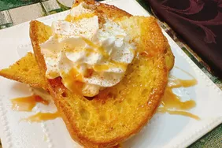

Coffee Cream French Toast

It's a wonderfull dish in french and it has alot of Ingredients that makes the dish soo wonderfull
Ingredients
- 1/2 cup cinnamon French toast flavor coffee creamer (such as Chobani Cinnamon French toast)
- 1 1/2 teaspoons brown sugar
- 1/4 teaspoon cinnamon
- 1 splash Mexican vanilla extract
- 1 pinch salt
- 4 slices Italian bread (such as Turano Pane Turano)
- 1 tablespoon butter
- whipped cream
- pinch ground cinnamon
- prepared caramel sauce, to taste
steps of preparation
- Whisk egg, coffee creamer, brown sugar, cinnamon, vanilla, and salt together in a shallow dish until foamy and smooth; set aside.
- Melt butter in a large nonstick skillet over medium heat
- Soak each slice of bread in egg mixture, 5 to 7 seconds per side. Place bread into the skillet, cook until golden brown on both sides, 3 to 4 minutes per side.
- Serve immediately. If desired, top with whipped cream, a dash of cinnamon, and caramel sauce.